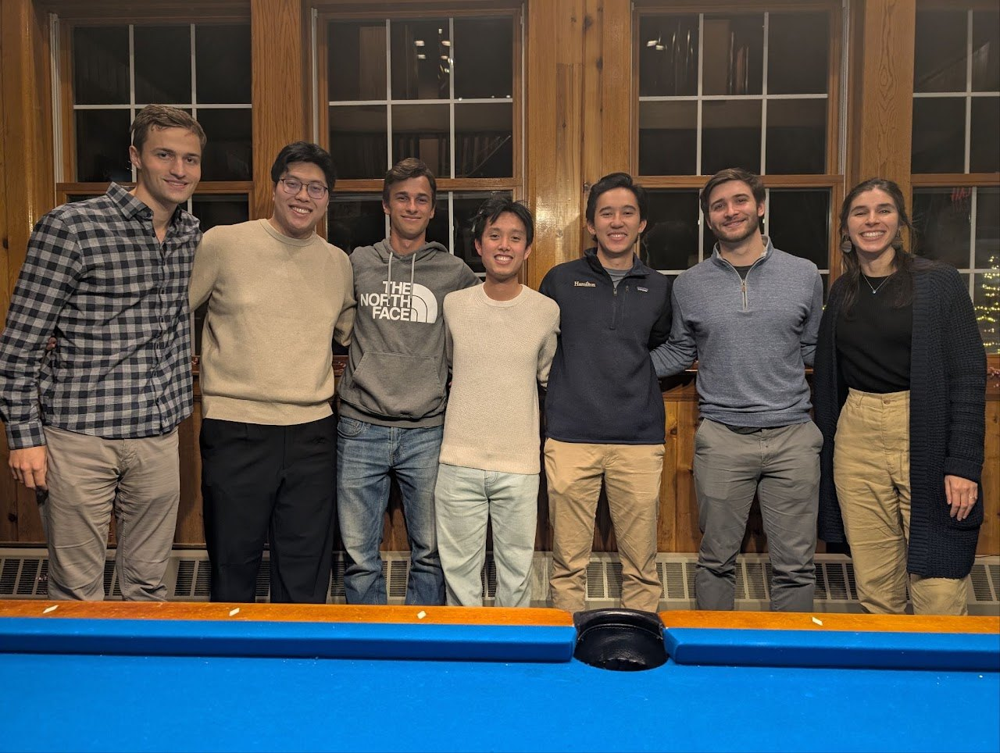
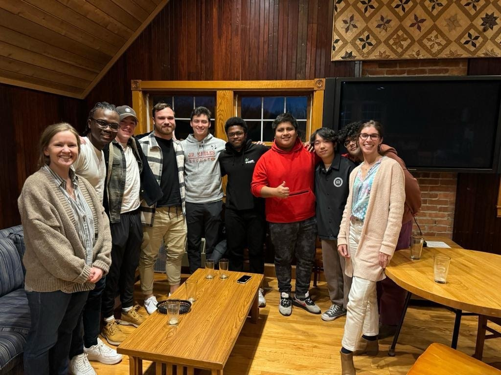
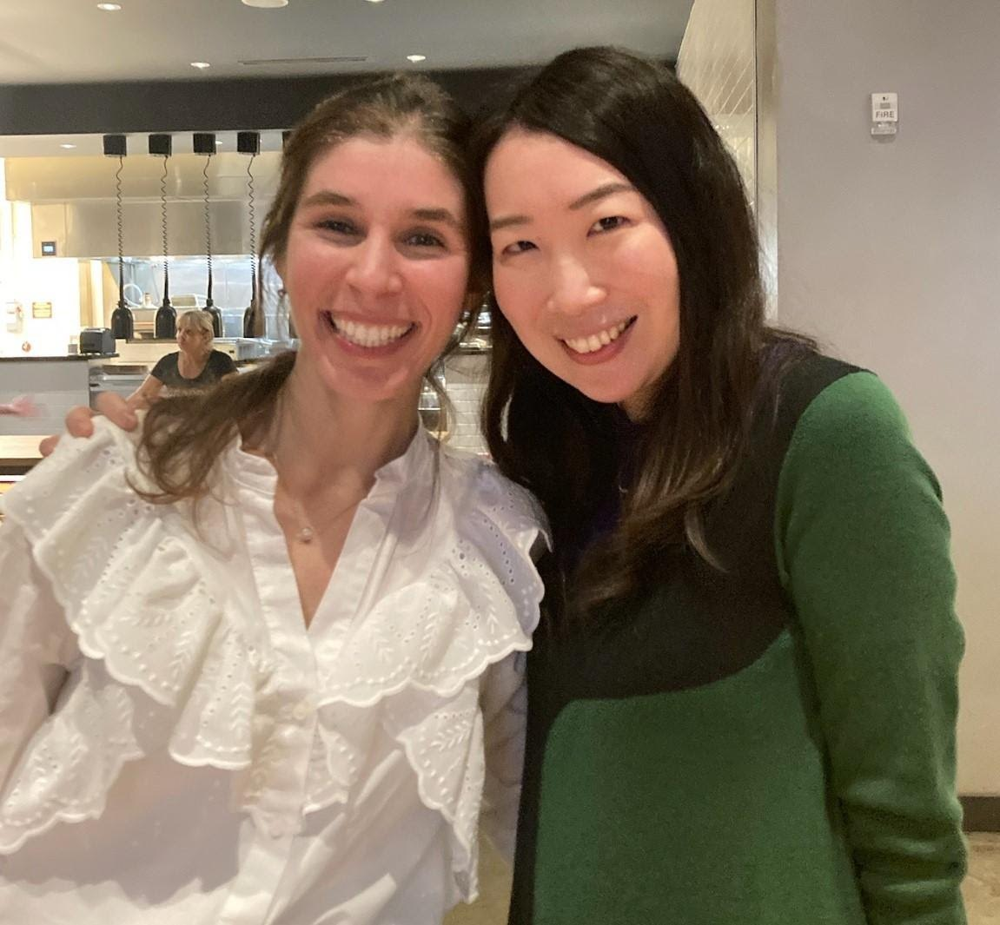
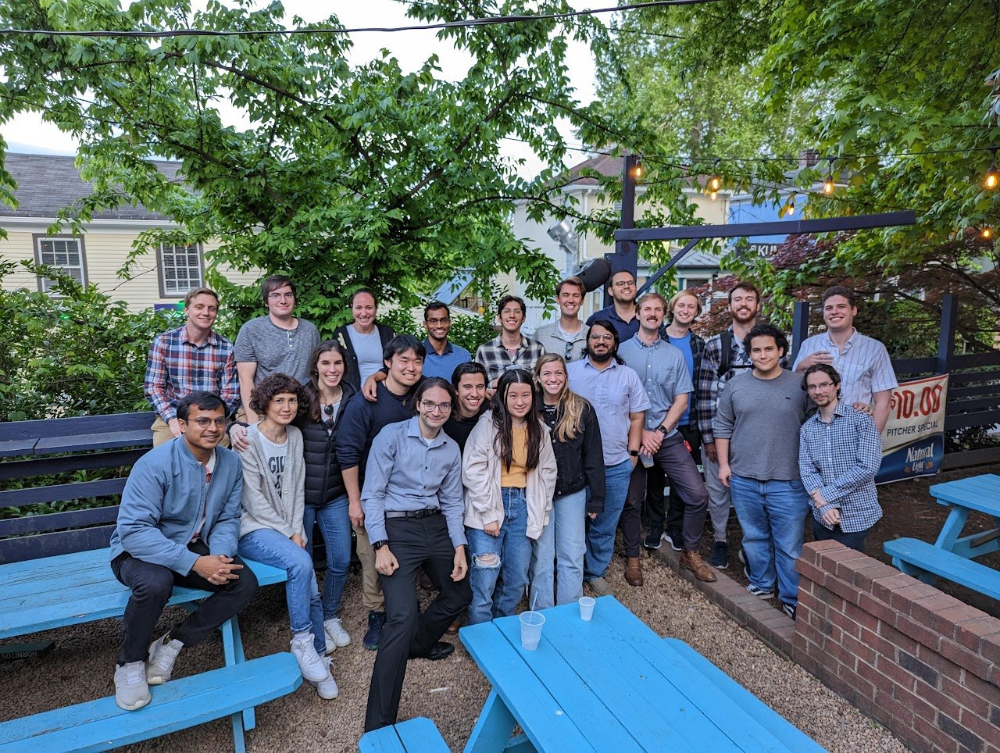
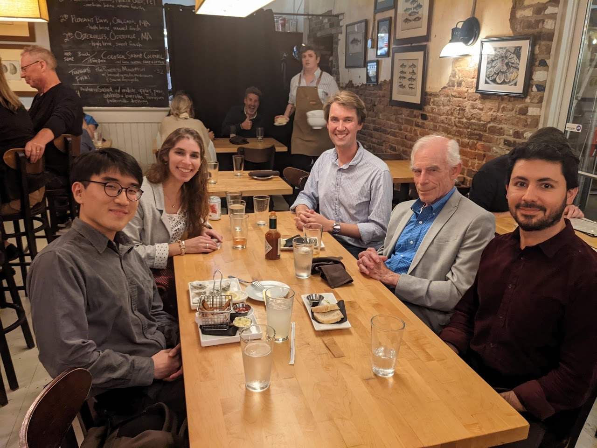

More
July 2025CeMENT workshop for junior faculty at the Federal Reserve Bank of Chicago. Here aboard a cruise on Lake Michigan with colleagues Yuting Gao, Huiyi Chen, and Jihye Heo. December 2024Annual Meeting of the Uruguayan Economic Society (SEU) at Universidad de Montevideo, Uruguay. Keynote speakers: Pablo Ottonello and David Pearce. 
December 2024End of a great semester with my senior students Andrew Swanson, Eddie Ha, Carter Chambers, Simon Lee, Kevin Cavicchia, and Greg Kopp, after a fun pool game at the Little Pub. July 2024Universidad ORT reunion (unplanned) at the XXXIX Jornadas Anuales de Economía del Banco Central del Uruguay. Here with professors Flavia Roldán and Néstor Gandelman, and alumni Eugenia Rodríguez and Sofía Viera. July 2024First International Conference of the Georgian Economic Association. Here with my colleagues and friends Ia Vardishvili and Miguel Mascarúa. May 2024End of a great semester with my Honors Thesis students, Daniel Zhang, Josue Herrera Rivera, Jack Jee, Brian Hu, and Athenia Li. 
December 2023End of my first semester at Hamilton College with some of my colleagues and students. 
October 2023Met with my colleague and friend, Prof. Haruka Takayama, at the 4th Women in International Economics Conference hosted by the University of Rochester. July 2023Celebrating my birthday and saying goodbye to my main advisor and favorite person, Prof. Eric Leeper, here matching in vibrant colors. May 2023PhD graduation with my colleague and friend Prof. Yooseon Hwang. April 2023Presentation of my dissertation with the committee, Prof. Eric Leeper, Prof. Eric Young, Prof. Ana Fostel, and Prof. Felipe Saffie. A huge thanks to them! 
April 2023End of the academic year with graduate students from the Economics Department at the University of Virginia. 
October 2022Dinner with Nobel Laureate in Economics Prof. Christopher Sims, and graduate colleagues and friends, Don Suh, Joe Anderson, and Hasan Toprak.